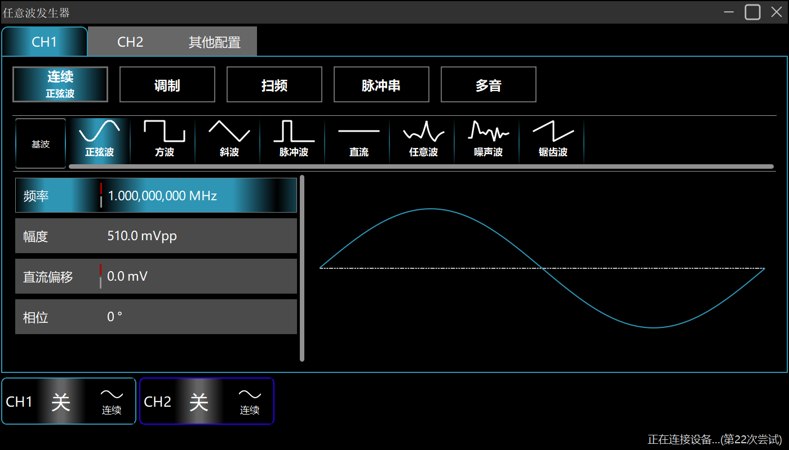
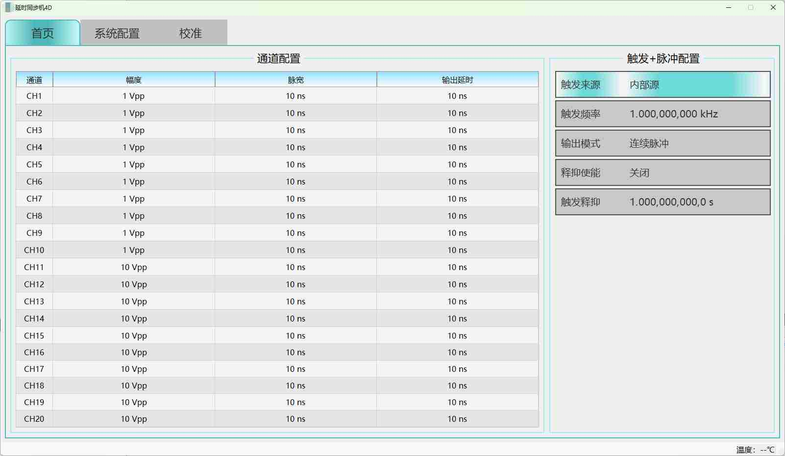
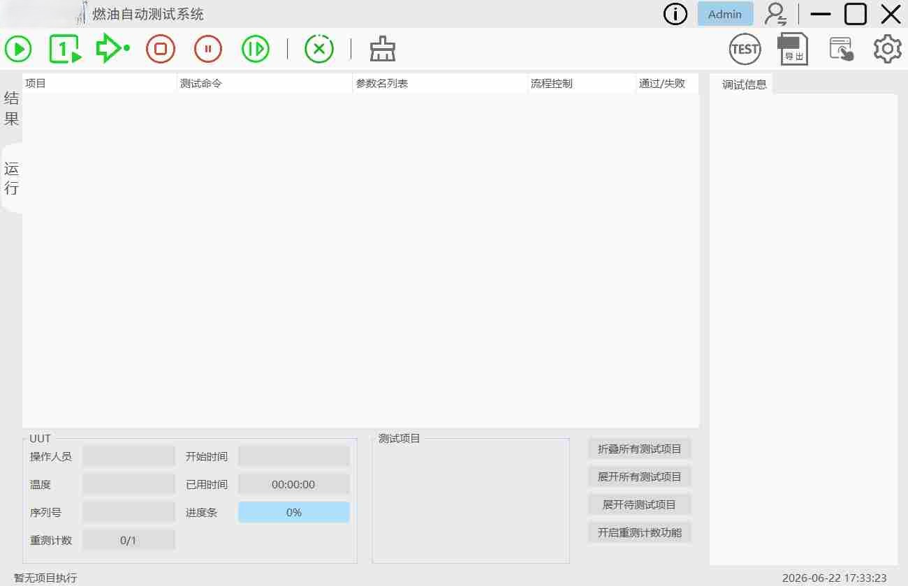
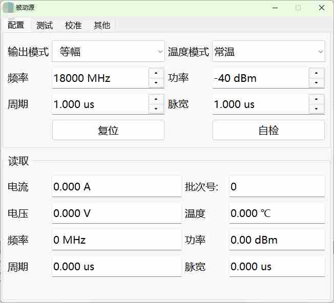
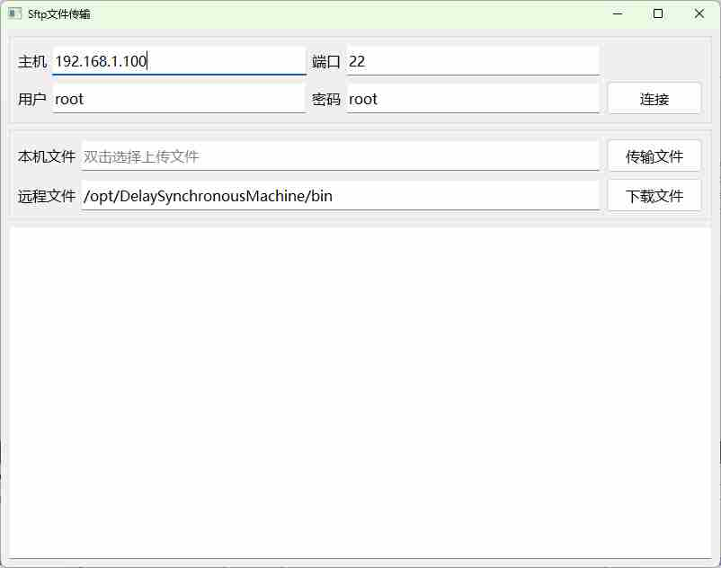
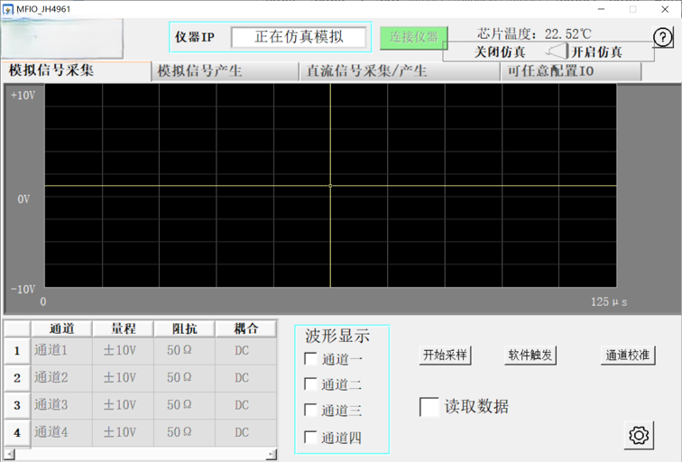

这里集中展示了我基于Qt平台开发的软件作品，涵盖了实用工具、客户端桌面应用以及网络通信等项目，既有工作产出，也有业余探索。

一款上位机波形生成工具，支持多种波形数据下发至ARM平台。 主要特性包括：波形实时预览、参数动态调节、文件传输能力。

一款跨平台上位机应用，支持多种通信协议，用于集中配置与下发延时、同步等各类控制参数。

基于数据库驱动的自动化测试平台，支持测试用例批量导入与顺序执行， 提供丰富的调试接口（异常断点、单步执行），提升测试效率与可靠性。

集成参数下发控制、全自动校准与测试三大核心模块，支持校准精度与范围的动态配置。

SFTP文件传输模块专为远程文件维护而设计，支持向远端上传或从远端拉取关键文件。

提供可视化上位机交互界面及配套驱动函数接口，支持波形实时采集与显示、模拟信号输出等功能。